Deco：把用户理解与语义标识符拼写分开的生成式推荐
《Separating Thinking from Spelling for Efficient Generative Recommendation》由 Danil Gusak、Anna Volodkevich、Ivan Oseledets、Evgeny Frolov 撰写，arXiv v1 公开于 2026-10-23 17:59 UTC。论文 PDF 未列作者机构，因此一作机构及合作机构均保留“未核验”，不根据姓名推测归属。本文按 2026-10-27 调研事实包与完整 12 页原文精读；唯一论文入口为 arXiv:2610.32980。代码与独立项目页未核验。文中的 ACM Conference’17、占位 DOI 和 ISBN 是模板内容，不能据此认定会议接收。
语义标识符推荐器会为标识符长度付出两次代价：历史中的每个物品被展开成多个码，候选搜索的每一步又反复经过完整主干。即使先压缩历史输入，宽束搜索仍可能占据大部分生成时间，而且会随候选数量、标识符深度和主干规模一起增长。
1. 背景和问题
推荐召回面对的是一个与自然语言回答不同的生成任务。一次请求通常不是输出一条最满意的句子，而是从大目录里取回数百至上千个候选，交给后面的排序、重排和业务约束模块。生成式检索为每个物品分配离散语义标识符，简称 SID，再根据用户历史逐级预测这些码。前层表示粗语义簇，后层逐步细分，最终落到可定位的物品。这样可以避免直接在巨大物品类别表上生成，但候选数量不会因此消失：召回仍需要保留多条合法路径，因而非常依赖束搜索。
在这种设计下，用户理解与标识符拼写常被同一个自回归主干承担。模型先读完历史，形成对下一项兴趣的判断；之后每写出一个 SID 码，整个主干再计算一次。历史已经通过键值缓存保存，因此这不是每步重新完整编码历史，但每条候选前缀仍要通过主干的所有层，并访问历史缓存。若历史有多个兴趣、候选又很多，搜索宽度乘上 SID 深度会迅速放大重复工作。重要区别在于：缓存减少了重新读入历史的费用，却没有消除大网络处理每个新前缀的费用。
最直接的优化是缩短输入。一个物品原本占据多个 SID token，把各层码的嵌入拼接后用小网络融合，就能让每个历史物品只占一个 token。在相同物品历史下，这会降低预填充成本；在相同 token 预算下，也能容纳更多历史物品。论文用 FusedGR 单独实现这种输入侧压缩，借此提醒读者，不应把所有收益都归因于后来的轻解码器。但融合只发生在输入端，输出仍要逐码展开，每个束前缀仍然调用主干。于是输入压缩可能把瓶颈更清晰地推到输出搜索一侧。
Deco 的出发点是检查这个接口是否过于昂贵：理解用户之后，拼出“可能喜欢什么物品”的标识符，是否真的需要和理解用户一样大的网络？语义码序列很短，输出受目录前缀树约束，后续码主要是在逐步细化一个已经形成的兴趣分布。作者假设，主干可以先一次性产生紧凑的下一项概念，再由小网络根据这个概念和已生成前缀完成剩余工作。这里的“概念”不是自然语言思维链，也不是某个已经选定的物品向量，而是可支持多个候选分支的连续条件表示。
这个假设需要比“模型变小所以更快”更严格的检验。若直接缩小主干，历史建模能力也被削弱；若只缩短历史，模型看到的证据减少；若并行独立生成各层码，又改变了自回归分解并可能产生不一致路径。本文希望维持 SID、前缀树、逐级条件概率和束搜索过程，把变化集中在计算分工：大主干读历史一次，小解码器承担完整搜索。其对照体系因此包含保留平铺输入但采用概念解码的 Deco-flat，以及保留融合输入但不做知识蒸馏的 Deco-CE，用来区分输入表示、解码接口和训练监督的贡献。
紧凑表示也有天然风险。若下一项取决于历史中特定物品的精确身份，而不是整体兴趣类别，把上百个历史物品压缩成很少的向量，可能无法保存每一个可复播物品的码。音乐推荐中，用户再次播放刚听过的一首歌，就是典型例子。平铺历史让模型直接看到原始码序列，天然容易复制；融合物品 token 与概念压缩则可能弱化这种能力。论文没有把这类退化解释成无关噪声，而是用重复目标和新目标分组分析，并加入显式历史指针，把概念生成与精确身份检索分开承担。
对推荐系统工程而言，这个问题关系到模型扩容与候选扩容是否必须同步增加服务成本。若大主干每增加一层，所有候选路径的每一步都会变贵，就很难同时追求更长历史、更大模型和更宽召回。将主干放到一次性历史编码阶段，能让候选数量主要影响小网络，提供另一种成本分配方式。它也使缓存对象发生变化：不一定保存随历史增长的大主干键值状态，可以保存较小的概念，再按请求运行轻量搜索。但缓存多久、兴趣变更如何刷新、状态失效怎样处理，仍是系统设计问题，论文中的表示大小不能直接代表完整部署成本。
对大模型研究而言，本文提出了一个有限但明确的接口观察：结构化检索的输出空间并非开放语言空间，语义理解所需的容量可能明显高于受约束符号展开所需的容量。由此可以联想到个性化检索、工具标识符生成或多阶段候选枚举中的模块分工。不过这种迁移只是研究启发，不能直接推出长答案、复杂工具程序或开放推理也能压缩到相同大小的概念。本文检验的是固定目录和短 SID 搜索，受益于合法前缀树、物品内容量化以及明确的召回指标。
阅读结果时还要区分论文证明了什么。七个公开数据集和经过优化的单卡服务流水线支持“相同输入教师附近的质量可以由更便宜的输出路径维持”，但不支持“所有数据、所有指标都最优”。系统实验使用 H100，属于生产风格的本地推理测量；它不是已经部署的线上实验，也没有给出点击率、留存或收入提升。本文最值得跟进的正是这个分工是否能在可比条件下复现，以及重复消费、极小主干、冷启动物品和业务过滤加入后，节省的解码计算会不会被新的瓶颈抵消。
从实验设计角度，文章把问题分成五个可检验问题：委派搜索是否保持准确率、原始时间花在哪里、候选和层级扩展后成本怎样变化、紧凑概念在哪些条件下不够，以及轻解码器怎样训练。这种拆分使模型论证与系统论证相互约束。单独一个总体吞吐数字无法解释为何变快，单独一个推荐分数也无法证明瓶颈已经缓解；只有两条证据在相同输入和搜索设置中闭合，才有理由把收益归于接口变化。
2. 方法
2.1 SID 代价与融合历史
设历史为 $H=(i_1,\ldots,i_T)$，每个物品的 SID 为 $s(i)=(c_i^1,\ldots,c_i^K)$，每层码来自大小为 $V$ 的码表。所有合法 SID 组成前缀树 $\mathcal T$，$\mathcal T(\pi)$ 表示前缀 $\pi$ 的合法后续码。论文保留标准自回归分解：
$T$ 是历史物品数，$K$ 是码层数，$B$ 是束宽；束搜索在每层扩展合法码后，仅保留分数最高的 $B$ 个前缀。完整主干方法先做一次预填充，再让后续 $K-1$ 层的束前缀通过主干，因此其主导计算可写为：
$F_{\rm bb}$ 是主干预填充成本，$D_{\rm bb}$ 是一个新码 token 的主干解码成本，后者随可访问的历史长度增长。FlatGR 中 $L_{\rm in}=TK$。公式不是严格的运行时间等式，未显式写出各方法共有的树约束、候选选择及硬件开销；它用于分辨哪些成本随束宽重复出现。融合历史把输入改成：
$E_k$ 是第 $k$ 层码嵌入，分号表示拼接，MLP 把多个码组合为一个物品 token，因此输入长度降为 $T$。训练时不能因为输入没有单独码 token 就失去密集监督：FusedGR 为每个历史位置接入下一物品的金标准前缀，用块因果掩码让该前缀只看见之前历史和自身先前码。原文公式 4 对所有历史位置与所有码层累加负对数似然，本笔记不再单独展示这一展开式。这个设计保持了不同模型的密集下一物品训练口径，但输出端的重主干搜索仍完整保留。
2.2 一次概念与完整轻量搜索
Deco 将大主干限制在一次历史读取，把整个合法 SID 搜索交给共享同一概念的小型因果解码器。 图中三条路径说明，融合输入与解码委派是可以拆开的两个步骤。
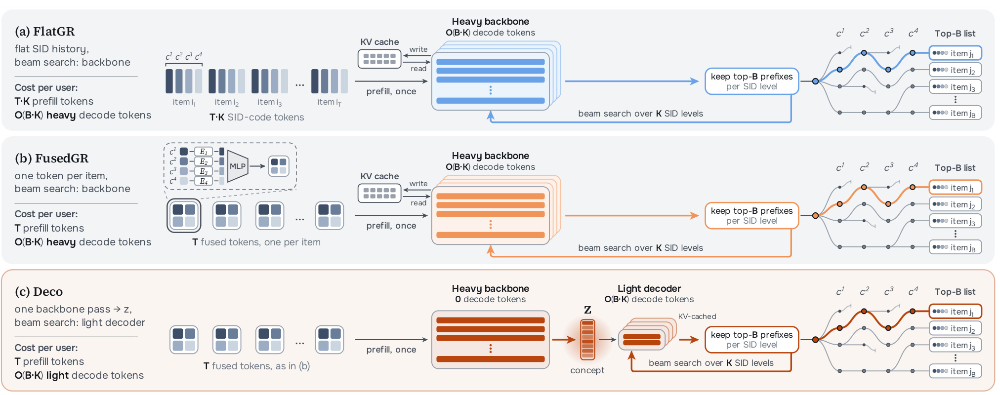
Figure 1 的上排是 FlatGR：每个历史物品贡献多个输入码，候选束还要反复穿过重主干。中排 FusedGR 把历史压成每物品一个 token，但右侧回路仍指向主干，因此只能直接节省预填充。下排 Deco 进一步切断这个重解码回路，主干输出一个概念，后面的前缀扩展、缓存更新和保留最高分分支都在轻解码器内进行。图中没有把自回归步骤并行抹去，也没有增加一条由主干逐项验证的路径；它改变的是搜索在哪里运行。这样，更多候选仍会增加工作量，却主要增加小网络的工作量，主干容量可以服务于用户理解，而不必为每条候选前缀重复付费。
读这张图还应注意两个容易混淆的地方。概念是同一用户全部束分支共享的条件，分支差异来自已生成码，而不是为每个候选重新计算一个主干表示。轻解码器也有自己的键值缓存，因此“零主干解码 token”不等于没有缓存、没有串行依赖或没有树掩码开销。输入融合只改变读取格式，委派只改变输出执行者；论文用 Deco-flat 保留平铺输入以隔离后者。若部署已有稳定的平铺历史接口，概念解码可先独立评估，再决定是否引入输入融合，避免把两个架构变更捆在一起而难以归因。
符号解释： 上述成本式中，主干与解码器的字母下标区分实际承担计算的网络，历史长度与束宽则控制不同维度的扩张。概念提取保留主干对整个可见历史的因果建模结果，但不把物品类别提前定死。下一步由主干最后状态 $h_T$ 经过线性映射形成概念：
$d$ 是主干宽度，$M$ 是概念向量数，默认 $M=2$；原文指出 $M$ 在 1 至 8 的范围表现相近。适配器 $\psi$ 再把概念映射到轻解码器宽度，记为 $u=\psi(z)$。对第 $k$ 层，解码器用概念和自身的已生成码嵌入得到最后位置状态 $o_k$，并只在合法子节点上归一化：
$g_\phi$ 为轻因果 Transformer，$e_j$ 是其独立码嵌入，$W_k$ 是层级输出头。轻解码器不再访问完整历史，也不保存主干历史缓存。 算法先用 $u$ 预填充轻解码器，从空前缀开始，累加每个合法码的对数概率，保留最高分的 $B$ 条扩展；非最后层将新码送回轻解码器，并复用父前缀缓存。最终 SID 按分数排序后映射为物品，主干不会再次验证。其成本近似为：
$F_{\rm dec}$ 与 $D_{\rm dec}$ 分别是轻网络预填充和单码解码成本。默认主干 8 层、宽 640，而轻解码器只有 2 层、宽 256，注意范围也缩为概念与很短的前缀。束宽变大时，两式中重复解码项逐渐主导，收益接近两类单码成本的比值，这是原文公式 8 的含义。若主干本来就比轻网络更小，收益可逆转。映射后的 2 个宽 256 的 bf16 向量共 1 KiB，可随历史变化预计算；这只指概念状态，不包括束内缓存和可选复制状态，也不意味着在线请求的完整工作内存只有 1 KiB。
2.3 密集训练与教师知情的软标签
Deco 在每个历史位置都产生概念 $z_t$，同时预测下一物品的各层码，相当于一批长度为 $M+K-1$ 的短序列，主干、融合器和轻解码器联合训练。只用交叉熵就得到 Deco-CE，不需要教师。但单次观测只告诉模型一个正确码，不能表达同一合法前缀下其他分支的相对合理性。为此 Deco 使用冻结的 FusedGR，Deco-flat 使用冻结的 FlatGR，沿着真实目标前缀提供层级软分布：
$q^k$ 是教师分布，$p^k$ 是学生分布，$\tau$ 为温度，两者都限制在同一金标准前缀的合法子节点上。损失权重按固定样本的初始损失一次设定：交叉熵项使用初始值的三分之一倒数，蒸馏项使用初始值的三分之二倒数；默认温度 1，Beauty 与 MovieLens 用 2。这里不是对全目录任意前缀做穷举监督，也不是要求学生输出必须等于教师。
把 KL 展开为交叉熵减去教师自身熵后，可以看到后一个量不随学生变化，因此不影响学生优化方向。这个代数关系把蒸馏与标签平滑连接起来，说明软监督的作用对象是合法分支间的相对偏好，而不只是正确码的概率。在 $\tau=1$ 时，忽略与学生参数无关的常数，目标等价于对混合标签做交叉熵：
$\ell$ 为交叉熵，$\delta$ 为正确码的点质量。这个推导解释了为什么教师质量不是学生质量的硬上限：真实标签仍占一定权重，而教师把平滑概率分给自己认为合理的合法分支，缓解稀疏观测造成的过拟合。教师只在训练提供信号，服务时没有教师调用。 学生可以从随机初始化训练；加载教师主干和融合器只是加快早期收敛的可选方案，论文主比较不依赖该初始化。
2.4 用历史指针保留精确物品身份
概念适合描述下一项的语义分布，却不保证记住历史中每首歌曲的身份。论文在重复消费明显的 Yambda 上增加复制指针，构造历史物品的概率分布，并与生成分布在 SID 空间混合：
$a_t$ 是由最后主干状态对历史物品状态计算的 softmax 注意力，$\lambda=\operatorname{sigmoid}(w_\lambda^\top h_T)$ 为学习得到的门控。若同一物品多次出现，所有对应位置的注意力相加。它直接把注意力权重当成过去物品的概率，而不再混合历史值向量。令 $A(\pi)$ 表示 SID 以 $\pi$ 开头的历史物品注意力总和，树上下一码的精确混合条件概率为：
分子是扩展前缀的混合质量，分母是当前前缀的混合质量，因此这是完整 SID 混合分布在树上的一致分解，不能简单写成每层都用固定 $\lambda$ 混合两组局部 softmax。指针在一次主干读取后计算，搜索只需保存历史 SID、权重及门控，仍不必在每步访问主干。训练最大化完整混合概率，蒸馏也约束混合分布。其性质是精确身份旁路：它承认概念压缩不承担全部情景记忆，而不是以更大的概念硬记所有历史。论文在 Yambda 为所有完整历史模型都加同类指针，避免只给 Deco 一个额外复制优势。
3. 实验结果
3.1 七个数据集与时间切分
主实验覆盖短历史电商、较大电商目录、电影与重复较多的音乐消费，先看规模与平均行为长度，才能理解为什么同一个接口在不同数据上有不同收益。
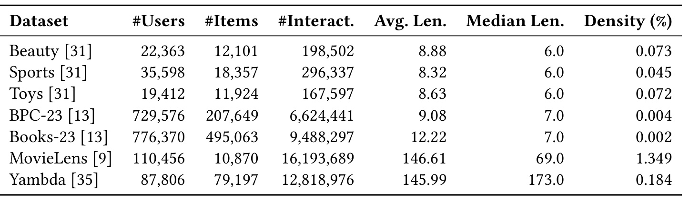
Table 1 显示，小规模 Beauty、Sports、Toys 各有约 1 万至 2 万物品、十几万至几十万交互；BPC-23 和 Books-23 扩大到约 20.8 万和 49.5 万物品，交互分别约 662 万和 949 万。MovieLens 的目录相对小，但交互超过 1619 万，平均历史长度约 146.61；Yambda 有约 1282 万交互，平均长度约 145.99，中位数 173，与短历史电商明显不同。稀疏度、目录大小和历史长度由此被部分拆开，不能把“目录更大”直接等同于“解码一定更慢”，也不能用单个电商小数据集推断长期兴趣压缩的普遍效果。
作者把 Amazon 历史截到最近 20 个物品，MovieLens 和 Yambda 截到最近 100 个。Yambda 使用公开音乐日志最近 30 天，移除精确重复、折叠连续同曲播放，并施加用户及物品门槛；测试目标中 29% 曾出现在最近 100 项历史。主协议按全局时间切分，最新 10% 交互为测试，再从此前部分取最新 10% 为验证；Yambda 使用最后 1 天与前 1 天。每个用户在评估时段的最后一次交互作目标，允许使用此前已经发生的同一时段交互作为历史，这保持了事件先后关系。评估不移除历史物品，因为重复本身就是合法目标。主表为 3 个随机种子的均值与标准差，验证选检查点用束宽 10，测试通常用束宽 100，因此复现要同时保持训练选择口径与测试搜索口径。
SID 默认 4 层、每层 2048 码，电商及电影使用文本内容嵌入，经残差量化聚类生成；音乐使用提供的 128 维物品嵌入，碰撞通过流行度规则解决。这些细节决定树结构与物品可辨识性。模型即使保持相同解码器，换一个 SID 构造方式也可能改变早层歧义和复制能力，因此架构实验应先固定码表，而不是让两组模型使用各自最有利的分词器。
3.2 相同输入教师的质量与成本
六个内部模型共享主干族、SID 和训练预算。FlatGR-match 只给平铺模型最近 $T/K$ 个物品，使其输入 token 数和融合模型一致；Deco-flat 则保留完整平铺输入，单独观察解码委派。下表同时保留全部数据与指标，防止只选有利单元格。
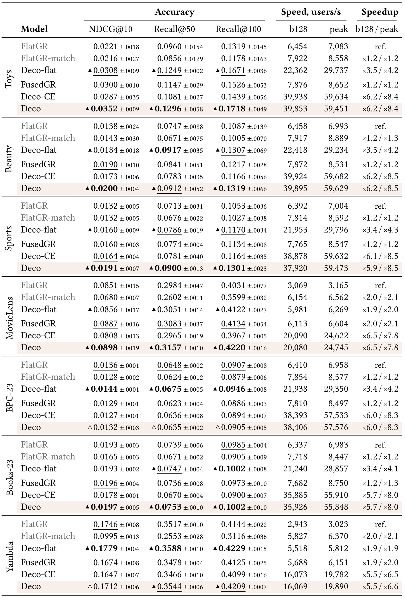
Table 2 最支持的结论是概念解码可以超过相同输入格式的教师。例如 Sports 上，FusedGR 的 NDCG@10 为 0.0160，Deco 为 0.0191，Recall@100 从 0.1134 到 0.1301；MovieLens 的 NDCG@10 从 0.0887 到 0.0898，Recall@100 从 0.4134 到 0.4220，幅度明显小于小电商数据。Toys 上，FusedGR 的 NDCG@10 为 0.0300，Deco 为 0.0352；Beauty 从 0.0190 到 0.0200。可见总体方向较一致，但没有理由把所有提升都写成大幅增长。小数据上的蒸馏正则化收益更大，是后续训练消融的重要解释。
跨输入格式比较则有反例。BPC-23 上 Deco 的 NDCG@10 为 0.0132，低于 FlatGR 的 0.0136，其 Recall@100 为 0.0905，也略低于 FlatGR 的 0.0907；在 Yambda，Deco 的 NDCG@10 为 0.1712，高于 FusedGR 的 0.1674，却低于 FlatGR 的 0.1746，而 Deco-flat 达到 0.1779。这里不能写“Deco 在七数据所有指标最好”。平铺输入可能保留另一类信息，概念解码本身也可作用于平铺接口。与此对应，Deco-flat 在七个数据的主要质量均值上不低于自己的 FlatGR 教师，说明收益不完全依赖融合。
吞吐列必须按相同测量位置比较。batch 128 时，Sports 上 Deco 为 37920 用户每秒、FlatGR 为 6392；BPC-23 为 38406 对 6410；MovieLens 为 20080 对 3069。峰值吞吐来自批大小扫描，不等于 batch 128，也不等于满足任意延迟预算的可用吞吐。长历史下，Deco 相对融合教师的倍数收窄，因为一次性预填充在总时间中占比上升。Deco-CE 与 Deco 走相同推理路径、吞吐接近，但质量多处较低，这把蒸馏的质量收益与服务成本分离开。表中的标准差提醒我们，微小均值差异还要结合随机性看待，不能把 3 次均值排列当成所有场景的统计保证。
此外，FlatGR-match 的低分给出输入预算对照：在 MovieLens，截短历史后的 NDCG@10 为 0.0680，融合教师为 0.0887；Yambda 为 0.0995 对 0.1674。两者读取相同数量 token，却看见不同数量物品，说明单靠缩短平铺历史追求速度会丢证据。论文并没有假定融合表示永远更好，而是在等物品数与等 token 数两种控制下分别判断，避免把历史覆盖增加误计成解码器本身的能力。
3.3 外部方法和另一种评估协议
外部生成器的检索实现差异较大，作者另设 eager PyTorch 测时，以各方法自身的检索路径运行，避免把一方充分编译而另一方未经优化的速度混入同一主张。
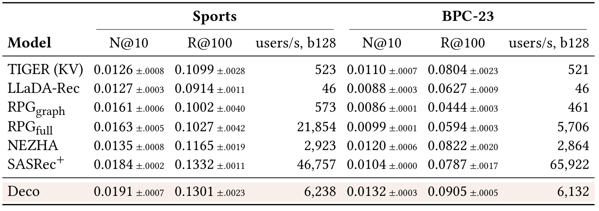
Table 3 在 Sports 与 BPC-23 对照 TIGER、LLaDA-Rec、两种 RPG 检索、NEZHA 和直接全目录打分的 SASRec+。Deco 的 NDCG@10 在两个数据上均为该表最高均值，分别是 0.0191 与 0.0132；BPC-23 的 Recall@100 为 0.0905，也领先该组。但 Sports 上 SASRec+ 的 Recall@100 为 0.1332，高于 Deco 的 0.1301，而且 SASRec+ 每秒处理 46757 用户，远快于 Deco 的 6238。因而本结果不能被概括为生成式方案已经在所有指标和成本上胜过判别式方案。小目录上的全目录打分有其硬件优势，RPG 的全目录版本在 Sports 也比 Deco 快，只是其 NDCG 更低。
这些吞吐不能与 Table 2 的编译流水线数字直接相除推导架构加速倍数。Table 3 明确采用 eager 设置，RPGgraph 还排除了图构建时间，模型上限约 79M 参数，检查点由验证 NDCG 选择。可复现比较应先说明是否包含候选图、索引构建、数据加载和最终 SID 映射，再决定自己关心的是请求路径、离线预处理还是完整运维成本。就本表而言，Deco 对较大 BPC-23 目录展示了较好的生成式质量和速度折中，但 SASRec+ 仍更快，真正业务选择还需结合候选覆盖、下游排序质量和资源预算。
外部对照还揭示目录扫描与自回归搜索的不同扩展规律：全目录方法的成本与物品数联系紧密，树搜索的成本则受束宽、码深和合法分支数共同影响。Sports 目录较小时，批量矩阵运算容易充分利用硬件；BPC-23 更大的目录改变了这种取舍。不能只凭方法名字判断谁在任意目录上都更高效。当前仅两个外部对照数据，尚不足以拟合两类成本的交叉点，也没有排除进一步优化外部实现后的排序变化。真实资源选择还需要按目标目录规模重新扫描批大小。
主实验刻意使用全局时间切分，作者另外给出 Beauty 留一法结果，只作为与既有文献的协议内比较。
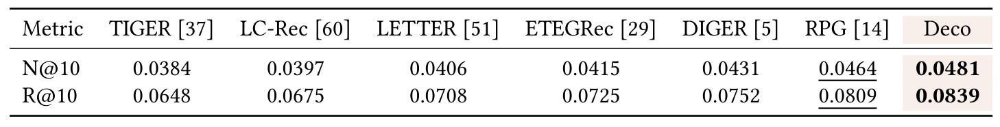
Table 4 中 Deco 的 NDCG@10 为 0.0481，Recall@10 为 0.0839；RPG 为 0.0464 与 0.0809，TIGER 为 0.0384 与 0.0648。它表明换到该文献常用协议时，Deco 仍有竞争力，避免读者误以为方法只对一种时间划分有效。但本表部分数字由文献报告而来，并不是所有方法都在本文同一全局时间切分下重新调参，所以不能拿 0.0481 与 Table 2 的 Beauty 0.0200 做提升率，更不能把二者的差距解释成模型训练退化。目标时点、可见训练交互和测试物品分布不同，会显著改变问题难度。
这张小表的用途是协议定位，而非替代主表。对于工程复现，优先执行全局时间切分，因为召回模型上线只能使用请求发生之前的数据；若需要追溯历史文献，再单独运行留一法。保留两套实验且清楚标记，比合并成一个大排行榜更有价值。本文也没有在这张表提供全部方法的统一服务吞吐，因此它只能支持质量对照，无法顺带说明留一法下某个方法的端到端效率优劣。
因此这里的比较需要同时保存协议名称与来源归属，后续文献若换了划分，也应另起一列而非直接替换旧分数。
3.4 50 ms p95 下的服务容量
系统效率使用单张 H100 80GB、bf16 权重、编译归一化和前馈及束步骤、预填充与搜索两段 CUDA graph，并共享同用户所有束分支的历史缓存。延迟覆盖预填充和完整树约束搜索，排除数据加载、SID 到物品映射及编译预热。因此这是经过优化的 GPU 推理路径测量。
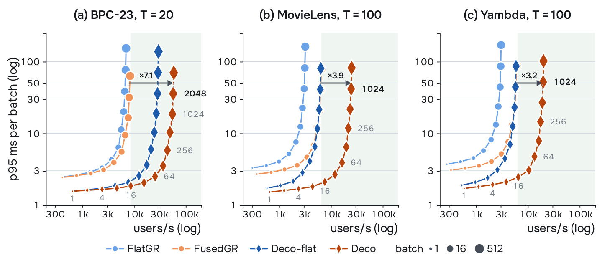
Figure 2 的横轴为每秒用户数，纵轴为每批 p95 延迟，二者均用对数坐标，点大小表示批大小。应在 50 ms 水平预算内寻找各方法能达到的最高吞吐，不能只读最右侧任意点。BPC-23、MovieLens、Yambda 三个面板中，Deco 相对 FusedGR 的预算内吞吐倍数分别为 7.1、3.9、3.2。附录 C 给出的全部七数据范围是相对 FusedGR 3.2 至 7.3 倍、相对 FlatGR 6.5 至 8.6 倍，摘要把不同参照下范围压成 3.2 至 8.6 倍时容易产生歧义。本文必须保留参照物，不能把最大 8.6 倍说成相对融合教师的结果。
时间分解更能解释原因。BPC-23 在 batch 128 时，输入融合把预填充从 FlatGR 的 4.4 ms 降到 FusedGR 的 1.5 ms，但融合教师仍有 14.9 ms 搜索，占生成时间约 91%；Deco 把搜索降到 2.1 ms。也就是说，大部分额外收益来自把重复计算搬出主干，而非仅减少历史 token。长历史使剩余预填充成本抬高，这解释了电影和音乐数据中较小的相对倍数。论文所有主要计时都每次重算概念，并没有用预计算概念给 Deco 额外优惠；剔除双方预填充后，Deco 在 batch 128 的解码速度可达教师的 4.8 至 7.7 倍。
这种指标仍与真实网络服务存在距离：没有到达过程、排队、跨请求调度、CPU 开销和业务过滤，p95 是本地批 GPU 时间的分布。原文的 production-style 表示使用了接近部署的执行优化，不表示在线 A/B。若线上短批请求占多、缓存频繁失效或请求到达不均，容量倍数需要重新测；若业务能提前刷新用户概念，在线路径还可能进一步缩短，但那会新增异步计算、状态版本与兴趣新鲜度成本，不能把理论可能性当成本次实测收益。
原文测时先预热再重复计时，并以多个随机顺序重复批次，较大批次使用较少重复次数。它减少编译和首次执行扰动，却仍不能替代跨硬件和跨实现的复现。
3.5 候选预算与 SID 深度
召回需要多少候选应由下游排序决定，轻解码的收益之一是让较宽搜索变得可负担，而不是只优化固定的百条候选。
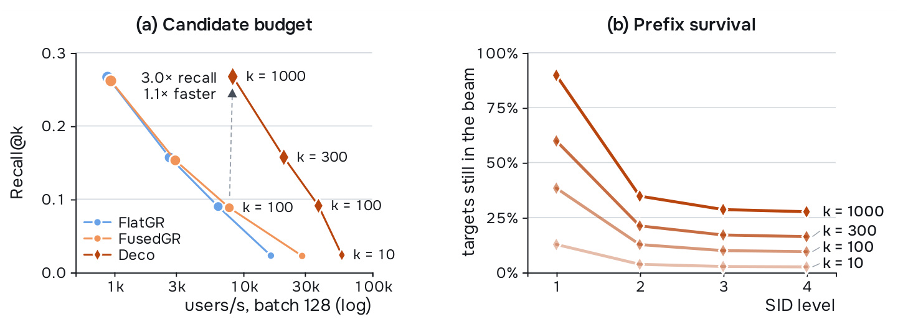
Figure 3 左侧把返回数量从 10 扩到 100、300、1000，横轴仍是 batch 128 吞吐，纵轴是相应的 Recall@k。Deco 在返回 1000 个候选时，比 FusedGR 返回 100 个还快约 1.1 倍，目标召回从约 0.088 到 0.267，约为 3 倍。这是不同返回列表长度的召回与成本折中，不能写成固定 Recall@100 提升 3 倍。若都返回 1000 个，论文报告 Deco 相对融合教师快 8.8 倍，才是同候选预算的速度比较。束宽增加会让更多早期语义簇留在搜索里，从而提高下游可见的候选上限。
右侧证明早层剪枝仍是主要损失来源：束宽 100 时，真实目标前缀在第 1 层只剩约 38%，第 2 层约 13%，之后无法救回已经删除的分支。将束放宽到 1000 大幅改善前两层存活，但这并不等于完整模型已经学会更准确的下一码分布，而是让搜索容忍更多不确定性。原文还显示，在返回 k 固定时，把束宽超过 k 的增益较小：Recall@100 约增加 3% 至 4%，Recall@300 约增加 2%，继续从 300 放到 1000 对 Recall@100 几乎无益。因此要区分“需要更多返回候选”与“只为提高固定前 k 排名扩大内部搜索”，两者的收益曲线不同。
SID 越深，输出需要的串行步骤越多；固定轻解码器能否承受额外层级，可由嵌套码本的深度消融检查。
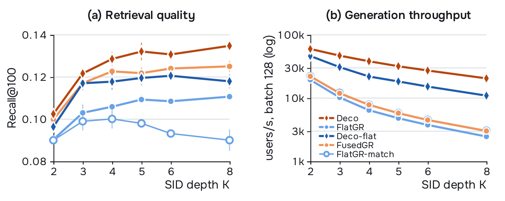
Figure 4 在 Sports 上使用每层 256 码的嵌套码本，将深度从 2 增加到 8，使新增层仍能细分物品。左侧 Recall@100 大致提升到 5 层后趋缓，Deco 在各深度的质量均值领先；固定 token 预算的 FlatGR-match 在更深时下降，因为它只能保留更少历史物品，不能把这条曲线的退化直接归因于码层过多。右侧显示成本分工：平铺模型增加一层会同时增加历史码和重解码步骤，融合教师只增加重解码，Deco 只增加轻解码。相同的码深变化因此对三者有不同影响。
从 2 到 8 层，Deco 吞吐降低约 2.9 倍，FusedGR 约 7.3 倍，FlatGR 约 7.9 倍；相对融合教师的速度优势从 2.7 倍增长到 6.8 倍。它支持“更精细标识符的展开不必重复调用大主干”，但不支持无限加深 SID：质量曲线已显示边际收益下降，串行依赖、树掩码和末端碰撞仍存在。特别是该图使用不同于主实验 2048 码的码本宽度，是为控制新增层仍有意义而设置的研究消融，不应把某个深度的绝对召回直接与主表对应单元格混为同一配置。
3.6 大主干扩展与反例
作者固定默认轻解码器，把主干从随机训练的 4M、20M、69M 扩展到 Qwen2.5 0.5B、1.5B、3B。预训练主干先做物品元信息与 SID 的双向对齐，再用 LoRA 训练；测时前合并 LoRA 权重。
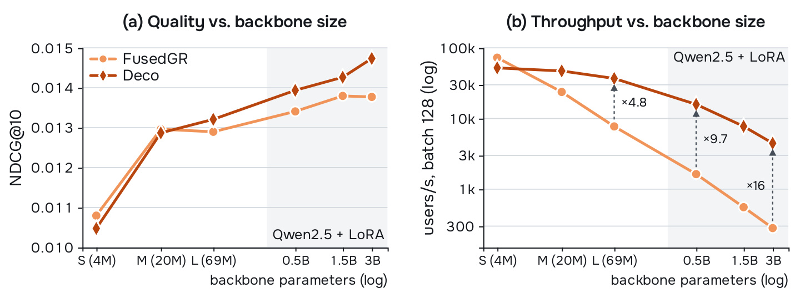
Figure 5 同时展示准确率与吞吐，避免只讲“大模型仍然快”却忽略其实际质量。BPC-23 上，从 69M 往上，Deco 的 NDCG@10 高于融合教师，3B 时约 0.0147 对 0.0138。融合教师从 4M 到 3B 的吞吐从约 73000 降到 281 用户每秒，慢约 258 倍；Deco 从约 52000 降到 4500，慢约 12 倍。后者也有明显变慢，原因是主干预填充确实变贵，只是候选扩展不再重复承担大主干成本，轻解码部分维持约 58000 至 59000 用户每秒。
本图包含一个重要反例：4M 的 S 主干仅 2 层、宽 128，本身比默认轻解码器更小，FusedGR 反而更快。这正符合成本公式，说明“拆成两个模块”不是自动获得速度收益；只有被移出的重复计算足够贵，才能覆盖概念投影与轻解码的额外成本。在 69M 处速度约提高 4.8 倍，0.5B、1.5B、3B 处约为 9.7、14、16 倍。1.5B Deco 与 69M 融合教师吞吐相近，NDCG@10 高约 11%，可理解为把节省的搜索预算重新投给用户建模。但这不是在七个数据上全面验证的统一扩展定律，图只覆盖 BPC-23，预训练模型与随机训练模型也具有不同训练配方。
由此还能读出一个容量选择顺序：当服务预算紧时，应比较“大主干加轻解码”与“小主干完整解码”的质量吞吐位置，而不是只看参数总数。20M 融合教师比 69M Deco 更慢且更不准，是这种比较的具体例子；但 4M 反例又说明轻解码器应随主干成本一起设计。默认 2 层宽 256 的网络不是所有规模的最优点。更进一步，Qwen 预训练和元信息对齐引入了额外知识及训练步骤，所以质量提升不能全部解释成参数数量变化。工程评估需将预训练可用性、LoRA 训练预算和最终合并权重的显存一起登记。
这个反例也要求复现报告同时列出总参数、主干参数和轻解码器参数，避免把“轻”理解成固定参数阈值。成本优势来自相对分工，而非模块命名。
3.7 概念的信息边界与复制旁路
若概念真的丢失了重要历史信息，那么让轻解码器重新看到全部物品状态应当稳定提升结果。作者在 Sports 和 BPC-23 对照将全部状态作为前缀、用跨注意力读取全部状态，以及 Deco-flat 读取所有 SID token 状态。
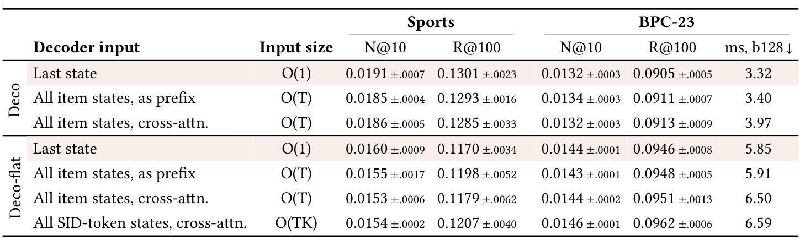
Table 5 中，默认 Deco 最后状态接口的输入规模是常数，Sports NDCG@10 为 0.0191；读全部物品前缀后为 0.0185，逐层跨注意力为 0.0186，并没有得到预期的系统性改善。BPC-23 的 Recall@100 可从 0.0905 到 0.0913，但延迟由 3.32 ms 增为 3.97 ms，代价与收益并不成比例。Deco-flat 读取全部 SID token 时也有小幅收益，但必须保留随历史长度和码深增长的状态。结果支持在这两个低重复数据中，主干一次凝聚的下一项条件足以驱动较好的候选生成。
这里的证据范围必须收住：两个数据集的消融不能证明概念是所有任务的充分统计量，也不能证明所有用户都不需要单项历史。更丰富历史的利用方式可能依赖解码器容量与训练配方；当前小网络未能稳定利用额外信息，并不意味着额外信息客观上不存在。作者因此继续转向音乐重复消费，这个设置刚好检验概念与精确身份之间的缺口。若应用有强复购、回听、回访或最近物品重现需求，只复现低重复消融就上线概念瓶颈会漏掉最危险的性能断点。
从接口状态看，全部历史前缀与跨注意力都把每个用户需保存的信息从常数增加到随历史增长；后者还在每层轻网络内重复读取历史。因此小幅召回上升需要同时换算成状态空间、带宽与请求批大小的机会成本。表中的延迟只在指定批大小测量，并非缓存跨用户共享时的总内存曲线。对特别长的历史或多域用户，表中相近的质量可能已足以支持选择紧凑接口，但仍应保留细分错误分析，观察被压缩掉的是否恰好是高价值长尾行为。
下面把同一音乐数据分为全部目标、重复目标和新目标，并对照有无显式复制指针。
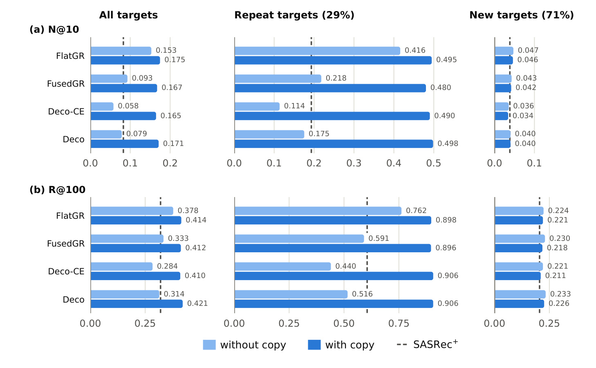
Figure 6 的浅色柱没有复制，深色柱加入复制，第一行是 NDCG@10，第二行是 Recall@100。不加指针时，Deco 的总体 NDCG@10 约 0.079，明显低于 FlatGR 的 0.153；融合教师也只有约 0.093。重复目标上的落差远大于新目标，论文指出超过 90% 的差距来自重复项。平铺码历史可以提供精确复制线索，而融合和概念压缩更容易保留“哪一类歌曲”，弱化“历史里具体哪首歌”的身份信息。这是本文接口最有价值的失败分析，而不是可以略过的异常点。
加指针后，Deco 总体 NDCG@10 到约 0.171，重复目标 Recall@100 到约 0.906，总体 Recall@100 约 0.421；各生成器在重复目标上都达到约 0.90 Recall 与 0.48 至 0.50 NDCG。新目标质量变化明显较小，说明复制模块主要恢复了身份记忆，没有凭空增强所有新物品理解。门控平均值约 0.27，接近重复目标占比 0.29；在重复目标前平均为 0.63、新目标前为 0.12，区分 AUC 约 0.90。这不是给模型输入测试目标是否重复的标签，门控仅由已见历史计算，目标分组用于事后分析。
同时，复制状态破坏了“整个模型只保留常数状态”的过度简化：虽然轻解码仍不访问原始主干缓存，系统需要存历史 SID 和权重，规模会随历史长度增长。主表 Yambda 已给各模型都配指针，因此不能把主表的音乐结果归功于纯概念独立完成全部任务。生成和复制混合还会影响推荐中新颖物品与旧物品的比例，实际业务应进一步检验探索覆盖及重复疲劳，本文离线指标没有回答用户是否愿意持续接受更多旧物品。
这组切面尤其说明，在允许历史物品再次出现的评估中，模型排行榜会混合兴趣预测和精确复制两种能力。若业务最终会过滤已消费物品，需要重新定义测试目标并重复比较，不能照搬当前音乐总体分数来判断新物品发现能力。
3.8 训练、码表与轻解码器容量
论文最后检查，准确率收益是否只是教师初始化或学生参数选择的偶然产物。
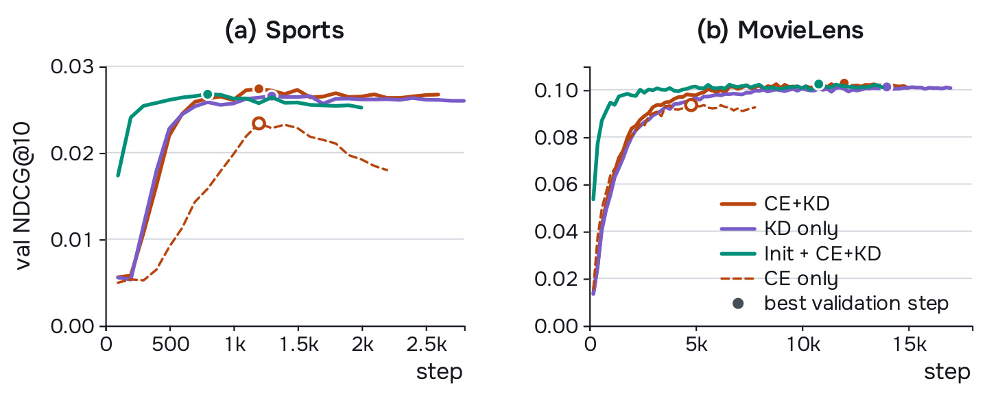
Figure 7 在 Sports 与 MovieLens 展示验证曲线。仅交叉熵的 Sports 学生约在 1200 步达到 0.023 后下降，联合蒸馏稳定在更高的约 0.027；MovieLens 的仅交叉熵约停在 0.094，含蒸馏的曲线达到约 0.101 至 0.103。只使用 KD 已接近 CE 加 KD，符合教师软分布提供正则化的解释。加载教师主干和融合器的绿色曲线早期上升更快，最终质量相近；这能缩短训练，但主实验使用独立初始化，所以不能把主结果误写成必须先复制完整教师权重才能获得的收益。
附录还让完整主干的 FusedGR 学生使用同一 KD 配方：Sports NDCG 提升约 7.5%，小于 Deco 相对教师约 19.4%；BPC-23 约为 0.8% 对 2.3%。这支持蒸馏与概念接口相互配合的解释，却不能把效果全部归于结构，因为 Deco-CE 只是在教师附近，并没有独立取得所有主结果优势。轻解码器从 1 至 4 层、宽 128 至 512、约 3.5M 至 21.6M 参数变化，两指标大致保持默认值 3% 范围，单层能再降低 20% 至 28% 延迟，表明默认配置较保守。输入码嵌入、解码前缀嵌入和输出类别向量默认不绑定；附录绑定实验多数情况下略有质量收益，但没有改变概念解码的主要比较方向。复现时应把这些训练和参数选择单独登记，不应一边替换绑定策略一边宣称只验证了输出接口。
训练曲线与测试表也不能混用：图中展示验证 NDCG 的峰值和早期动态，主表报告选定检查点在测试时段的表现，绝对数值本来就可不同。KD 只沿真实前缀教授分布，搜索阶段学生会遇到自己生成的前缀，二者仍有分布差异；本文通过最终召回验证其影响较小，没有证明这种差异完全消失。后续若扩到更深 SID 或动态目录，应该重新检查学生在偏离真实路径后的概率校准，而不只复现收敛更快这一表面现象。
4. 总结
Deco 最明确的贡献是把生成式召回的两个容量需求分开：大网络负责从历史形成下一项条件，小网络负责在固定合法空间内展开候选。输入融合已经是一个有用但不充分的基线，完整轻量束搜索才切中了宽候选下的主要重复成本。保留自回归分解和树约束，使它不必依赖并行码独立假设，也不需要推测解码式的主干验证。教师蒸馏增强质量，服务路径仍保持简洁；精确身份另交给历史复制，则暴露了压缩接口的能力边界，而非用一句“概念足够”掩盖所有历史需求。
推荐侧最可操作的启发是先测成本分解，再决定改哪里。若现有系统主要耗时在百束以上的完整主干解码，可以固定 SID、目录树、输入历史和训练切分，只替换输出为轻解码器，利用 Deco-flat 思路隔离收益；若预填充已经占主要时间，还需评估融合历史或概念缓存。候选数量也应与下游排序协同：1000 候选带来更高目标覆盖不等于最终展示质量提升，排序负载、去重和业务过滤会重新分配预算。基准中的单卡速度足以构成原型动机，尚不足以决定生产资源配置。
大模型侧的启发集中在受约束输出接口。个性化用户表示可以比候选符号展开更昂贵，模型容量不必均匀投到每个生成 token 上；概念与复制的组合也类似语义偏好和精确事件记忆的分工。若迁移到 RAG 或工具调用，可先选短标识符、合法集合固定、输出需要多候选的任务验证。开放文本生成、长程序、需要不断读取外部证据的 Agent 不具备同样条件，不能仅凭本文就假定一次概念足以支持后续全部推理。
需要保留四项限制。第一，主表相对配对教师的优势不能改写为对 FlatGR 的全指标胜利，BPC-23 和 Yambda 的 NDCG 明确存在反例。第二，50 ms p95 是优化 GPU 流水线的批延迟预算，排除了加载和 SID 映射，缺少真实请求队列与线上 A/B。第三，音乐域的复制指针是额外身份状态，1 KiB 仅指默认映射概念，不是所有用户状态或峰值内存；长期缓存还要处理兴趣更新与失效。第四，4M 小主干反而更快，说明委派适合重复主干计算足够昂贵的区间，不是一种无条件优于端到端小模型的原则。
后续可以按优先级推进三个验证。先复现 Sports 与 BPC-23 的主表配对，固定 3 个种子和全局时间切分，同时记录 CE、KD 和复制开关；再在目标服务的真实批分布中测预填充、树掩码、搜索及后处理，检查吞吐收益是否迁移；最后用重复比例、历史长度、冷启动物品和目录更新做切面，观察压缩概念的失败是否集中于某些用户。代码尚未核验，机构也未在原稿标明，因而当前适合依据论文构建可检验原型，等待后续实现或版本补充后再讨论复现一致性。本文记录的是技术研究与证据边界，不把离线召回改善预先当成线上产品收益。
概念缓存还提供一个独立研究问题：刷新应按每次交互触发、定期批处理还是按兴趣变化触发。刷新过慢可能错过近期意图，刷新过快则把主干计算搬到异步队列而没有真正减少总量。论文主要结果每请求重算概念，未验证上述策略，因此后续系统实验应同时报告请求路径延迟、后台刷新成本和状态陈旧程度，才能判断缓存带来的是资源节省还是计算位置变化。